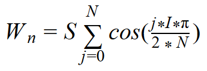
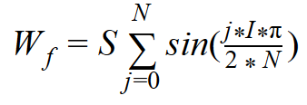
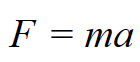
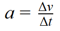
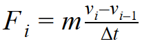
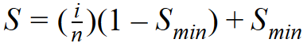

One of the biggest open problems in the graphics field is rendering hair-like protrusions efficiently. A naïve approach would be to represent every hair with its own geometric model. However, when hair is present, it tends to be plentiful. That just isn't feasible if you are rendering a dynamic scene. Our approach to rendering fur using shells and fins can achieve a more efficient frame rate while also keeping a good visual quality for the model.
Hair like protrusions (i.e. fur and grass) can be approximated using a series of planes called "shells" which can be layered, one on top of the other and separated by an arbitrary distance.
With the sheer volume of hairs which need to be rendered, it is untenable to create an artist rendering. As such, we implemented two different methods of texture generation as described below.
A random intensity texture passed through a Gaussian filter is repeatedly sampled in order to generate each of the shells. To create a texture for each shell, this blurred noise is low-pass thresholded at progressively higher values so the shells become progressively more transparent. If a point of noise is above the threshold, the point on the shell texture is opaque, otherwise the shell texture is transparent at this point.
The shell textures were generated by randomly initializing a base layer with a hair direction. We recursively filled in each of our remaining layers taking into account our previous layer's hair direction.
We found that if we rendered hairs too close to one another, the outer layer would become opaque, and ruin the illusion created by the shells. To solve the problem, we only added hair every other texel.
While shells provide a satisfying illusion from afar, it's relatively fragile. As soon as one moves near an object textured with shells, the inter-shell distance is readily apparent.
Alpha blending played a critical role in the hair simulation. Hair is small, and light can pass between individual strands. If alpha blending had not been implemented, we would only render the outermost shell, which isn't realistic. Furthermore, we would be wasting a lot of CPU cycles performing lighting calculations for numerous hairs which wouldn't be displayed in the end.
Fins are commonly employed in order to maintain the illusion provided by the shell textures along an object’s silhouette. When an object’s normal is orthogonal to the view vector, the gaps between the shells become apparent. Fins fill in these gaps by extruding edges on a mesh along the edge’s normal. When an edge’s normal is almost parallel to the view vector, extruding fins accentuates the triangles of the base mesh and breaks the illusion of a smooth surface. Therefore each edge must be identified as a silhouette edge before being extruded. Our implementation of fins is severely limited by WebGL’s lack of support for a geometry shader. Each frame update, we calculate the faces and locations of each fin outside of the normal graphics pipeline. For high-poly meshes, this severely impacts our FPS.
In order to generate a subtle breeze, the hair can be gently moved according to an applied force.
To calculate the displacement components, the following equations were used:   where Wn is the displacement along the normal direction, Wf is the displacement along the radial direction, S is the inter-shell distance, I is the wind intensity, and N is the number of shells.
Intensity I is calculated using the magnitude of the projection of the wind vector onto the plane normal to shell's normal
We can move the hairs according to an arbitrary applied force swapping out the wind force of our choice.
We ended up simulating how an objects momentum would move its hair. From Newton's second law of motion, we know that: 
We also know that acceleration is defined as: 
From this knowledge, we can find the change force, and subsequently the deformation of the hair based on the same equations we used to find the deformation due to wind. 
This same displacement method can be applied to fins. To acheive a smooth curve, the fins must be divided into sub-fins as they become farther away from the surface.
Lighting of the fur follows the basic Phong illumination model with approximations for self-shadowing and the surface normal of the shells. The hairs of each shell can be approximated by a cylinder along the axis of the direction of the hair. The normal used for diffuse and specular calculations is the normal that maximizes the dot product with the light-vector L for diffuse and the halfway-vector H for specular. For diffuse lighting, the normal is given by the projection of the light vector onto the plane normal to the tangent. The same approximation is made with the halfway-vector for the specular component. For straight fur, the tangent is the displacement of a given shell defined by the dynamics above. We were unable to implement effective approximation for curly fur, but the simplest method is to generate an additional texture of its displacement during shell texture generation.
Shadows are approximated based on the distance from the surfaces and a min-shadow factor using the following equation:  The shadow factor at a shell is given by where i is current shell number and n is the total number of shells. The output light intensity is simply scaled by this shadow factor.